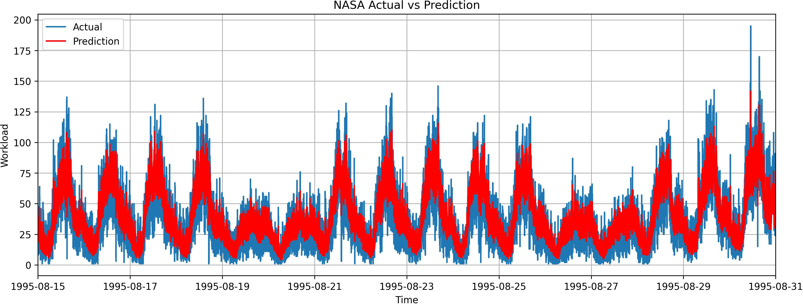
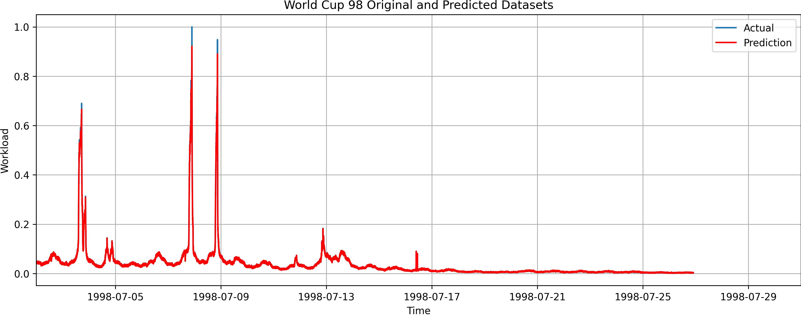

Guruge and Priyadarshana (2025), DOI 10.3389/fcomp.2025.1509165. Experiments executed locally on 9 October 2026.
Outcome: 4 complete training-and-evaluation runs were executed from the released notebooks. The tables below contain measured outputs, not estimates. Execution reproduces the authors' released code behavior; numerical agreement with the paper must be assessed separately. Known evaluation artifacts remain intact. No Digital Twin or uncertainty-aware controller was implemented.
Each run retains the authors' settings: a 70/30 chronological row split, Prophet seasonality, look-back 1, two LSTM layers of 50 units, Adam/MSE, batch 16, 20-epoch maximum, 20% neural validation and patience 5. NumPy/TensorFlow seeds are 42; other initialization sources are not fully fixed. Positive signed differences mean reproduced values are higher. Differences are computed against the printed paper values: especially for FIFA MSE, coarse publication rounding limits the precision of percentage comparisons.
run-02: 6 epochs completed; lowest validation loss at epoch 1.
| Metric | Paper | Reproduced | Signed difference | Absolute difference | Difference % |
|---|---|---|---|---|---|
| MSE | 63.836 | 64.4096145 | 0.573614466 | 0.573614466 | 0.898575202 |
| RMSE | 7.99 | 8.02556007 | 0.0355600718 | 0.0355600718 | 0.445057219 |
| MAE | 6.164 | 6.20651994 | 0.0425199441 | 0.0425199441 | 0.689810904 |
| R2 | 0.9 | 0.899246282 | -0.000753718006 | 0.000753718006 | -0.0837464451 |
| TPT_ms | 3492 | 4943.02678 | 1451.02678 | 1451.02678 | 41.5528861 |
Executed notebook · Predictions · Full metrics and history
run-03: 6 epochs completed; lowest validation loss at epoch 1.
| Metric | Paper | Reproduced | Signed difference | Absolute difference | Difference % |
|---|---|---|---|---|---|
| MSE | 63.836 | 64.2836395 | 0.447639451 | 0.447639451 | 0.701233553 |
| RMSE | 7.99 | 8.01770787 | 0.0277078676 | 0.0277078676 | 0.346781823 |
| MAE | 6.164 | 6.2028218 | 0.0388217962 | 0.0388217962 | 0.629814994 |
| R2 | 0.9 | 0.89944334 | -0.000556659675 | 0.000556659675 | -0.061851075 |
| TPT_ms | 3492 | 4709.52725 | 1217.52725 | 1217.52725 | 34.8661871 |
Executed notebook · Predictions · Full metrics and history
| Metric | Repeat count | Mean | Sample standard deviation | Minimum | Maximum |
|---|---|---|---|---|---|
| MSE | 2 | 64.346627 | 0.0890777873 | 64.2836395 | 64.4096145 |
| RMSE | 2 | 8.02163397 | 0.00555234679 | 8.01770787 | 8.02556007 |
| MAE | 2 | 6.20467087 | 0.00261498546 | 6.2028218 | 6.20651994 |
| R2 | 2 | 0.899344811 | 0.000139341282 | 0.899246282 | 0.89944334 |
| TPT_ms | 2 | 4826.27702 | 165.109099 | 4709.52725 | 4943.02678 |
Two repeats characterize observed variability only; they do not establish confidence intervals or significance.

run-01: 6 epochs completed; lowest validation loss at epoch 1.
| Metric | Paper | Reproduced | Signed difference | Absolute difference | Difference % |
|---|---|---|---|---|---|
| MSE | 1.1e-05 | 1.15274576e-05 | 5.27457611e-07 | 5.27457611e-07 | 4.79506919 |
| RMSE | 0.003358 | 0.00339521098 | 3.72109818e-05 | 3.72109818e-05 | 1.1081293 |
| MAE | 0.000675 | 0.000657172493 | -1.78275071e-05 | 1.78275071e-05 | -2.64111217 |
| R2 | 0.998318 | 0.998280544 | -3.74555395e-05 | 3.74555395e-05 | -0.00375186459 |
| TPT_ms | 3971 | 5603.30582 | 1632.30582 | 1632.30582 | 41.1056615 |
Executed notebook · Predictions · Full metrics and history
run-02: 6 epochs completed; lowest validation loss at epoch 1.
| Metric | Paper | Reproduced | Signed difference | Absolute difference | Difference % |
|---|---|---|---|---|---|
| MSE | 1.1e-05 | 1.13150538e-05 | 3.150538e-07 | 3.150538e-07 | 2.86412545 |
| RMSE | 0.003358 | 0.00336378564 | 5.78563523e-06 | 5.78563523e-06 | 0.172294081 |
| MAE | 0.000675 | 0.000649147151 | -2.58528491e-05 | 2.58528491e-05 | -3.83005171 |
| R2 | 0.998318 | 0.998312227 | -5.77301924e-06 | 5.77301924e-06 | -0.000578274582 |
| TPT_ms | 3971 | 5285.89845 | 1314.89845 | 1314.89845 | 33.112527 |
Executed notebook · Predictions · Full metrics and history
| Metric | Repeat count | Mean | Sample standard deviation | Minimum | Maximum |
|---|---|---|---|---|---|
| MSE | 2 | 1.14212557e-05 | 1.50192175e-07 | 1.13150538e-05 | 1.15274576e-05 |
| RMSE | 2 | 0.00337949831 | 2.22210757e-05 | 0.00336378564 | 0.00339521098 |
| MAE | 2 | 0.000653159822 | 5.6747737e-06 | 0.000649147151 | 0.000657172493 |
| R2 | 2 | 0.998296386 | 2.24029249e-05 | 0.998280544 | 0.998312227 |
| TPT_ms | 2 | 5444.60213 | 224.440903 | 5285.89845 | 5603.30582 |
Two repeats characterize observed variability only; they do not establish confidence intervals or significance.

Microsoft Windows 11 Home 10.0.26200; 12th Gen Intel(R) Core(TM) i7-1255U; approximately 15.8285065 GiB visible RAM. TensorFlow used the CPU; the Intel Iris Xe adapter is not a CUDA training GPU. CPU intra-op threads 4, inter-op 2, OMP 4. oneDNN retained its default enabled behavior.
Python 3.12.14 (main, Aug 25 2026, 14:01:42) [MSC v.1944 64 bit (AMD64)]. tensorflow 2.17.0, tensorflow-intel 2.17.0, keras 3.4.1, prophet 1.1.5, numpy 1.26.4, pandas 2.2.2, scikit-learn 1.5.1, matplotlib 3.9.2, keras-tuner 1.4.7, cmdstanpy 1.2.4, nbclient 0.10.0, nbformat 5.10.4, ipykernel 6.29.5. Actual complete package versions are frozen in requirements-working.txt. TensorFlow/Prophet fitting and prediction passed the independent environment smoke check; pip check found no dependency conflicts.
The official checkout is pinned to 354f0042ae7d5812dc7a44335a56b4992e853483. All original numerical notebook cells were executed unchanged. Required preparation created the absent images directory. A read-only instrumentation cell copies fit history immediately after training; final added cells export existing predictions/metrics/history only. The runner creates an explicit virtual-environment Jupyter kernel and sets local CPU thread limits. Original unpinned install cells are retained; before/after package inventories are checked. There is no change from 20 to 50 epochs, no realignment, no training-only transform correction and no added full deterministic seeding.
| Property | NASA | WorldCup98 |
|---|---|---|
| n_rows | 81396 | 125300 |
| total_requests | 3461612 | 1352804107 |
| first | 1995-07-01 00:00:00 | 1998-04-30 21:30:00 |
| last | 1995-08-31 23:59:00 | 1998-07-26 21:59:00 |
| missing_minutes | 7884 | 10 |
| zero_rows | 0 | 0 |
| duplicate_timestamps | 0 | 0 |
| prophet_train_rows | 56977 | 87710 |
| test_rows | 24419 | 37590 |
| lstm_train_pairs | 56976 | 87709 |
| lstm_validation_pairs | 11396 | 17542 |
The provided CSVs are used unchanged, with exact hashes in source-audit.json. NASA retains naive -0400 local timestamps; the official WorldCup recreation tool emits UTC, stored as naive datetimes. Missing timestamp rows are not reinserted. The preprocessing notebook aggregates all parsed HTTP requests by observed minute without method/status filtering. No raw trace reconstruction or augmentation is used in these experiments.
Independent checks in verification.json recompute exported scores and establish whether the final-row fallback and original source identity hold. These are implementation findings, not proof that every printed paper result was generated by this exact code.
NASA run-01 completed all original author cells, then failed in our added exporter with KeyError: loss: prediction had reset the model History attribute. Its partial executed notebook, predictions and traceback are preserved. The exporter was repaired to copy fit history immediately after training, without changing any author numerical cell. This failed-export attempt is excluded from completed-run aggregates. pandas emits chained-assignment/deprecation warnings; preserving pandas 2.2.2 retains the released behavior. Optional Plotly import warnings do not block static notebook figures. The initial generic uv interpreter inventory encountered a blocked uv Python launcher; the bundled Python 3.12.14 interpreter and virtual environment work. No application-control setting was changed.
Observed numerical variability is consistent with incomplete random-state control and stochastic training, but the historical author TensorFlow version, full dependency lock, hardware and run logs are missing. The exact contribution of these differences cannot be quantified. Hardware and batch timing protocol differ from the unspecified original setup. Timing is the sum of Prophet and LSTM full-test prediction calls, not training time or an online scaling action.
This reproduction covers only the Prophet–LSTM rows in Tables 4 and 5. Standalone ARIMA/LSTM/Bi-LSTM scripts and sufficient five-step scoring settings are missing. WorldCup comparator MSE/R² pairs imply a different target variance from the hybrid; Bi-LSTM five-step RMSE and MSE are inconsistent under ordinary rounding. The cause remains unverified. Do not describe the entire table as reproduced.
For subsequent research, first create a separately labelled causal baseline: align targets, fit transformations on training data and eliminate truth fallbacks. Only then compare calibrated uncertainty and SLO-aware Digital Twin decisions. Current point-forecast error results do not establish calibrated uncertainty, latency-SLO compliance or autoscaling cost improvement. No corrected experiment is mixed into these outputs.
Exact rerun commands are in README.md. The source audit retains precise cell excerpts and data hashes. Prior detailed inspection is available in the prior audit. All orchestration/export/verification scripts are authored for reproduction; the baseline model methodology is the authors' code.